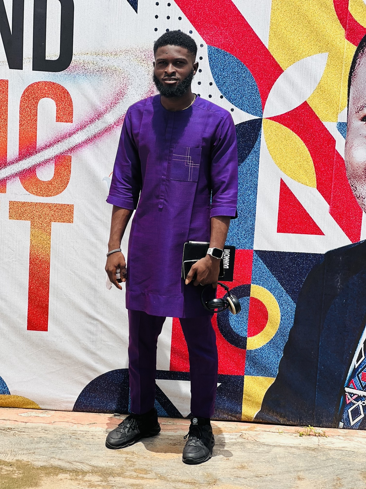
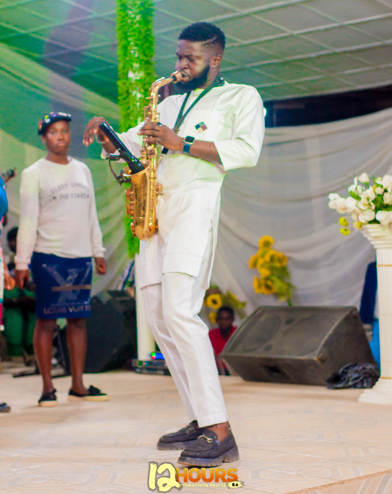
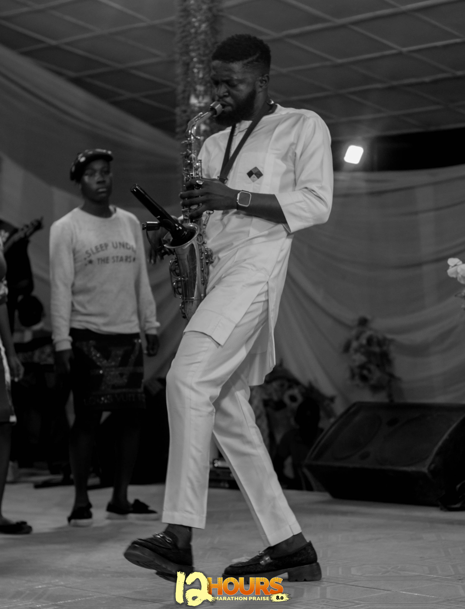
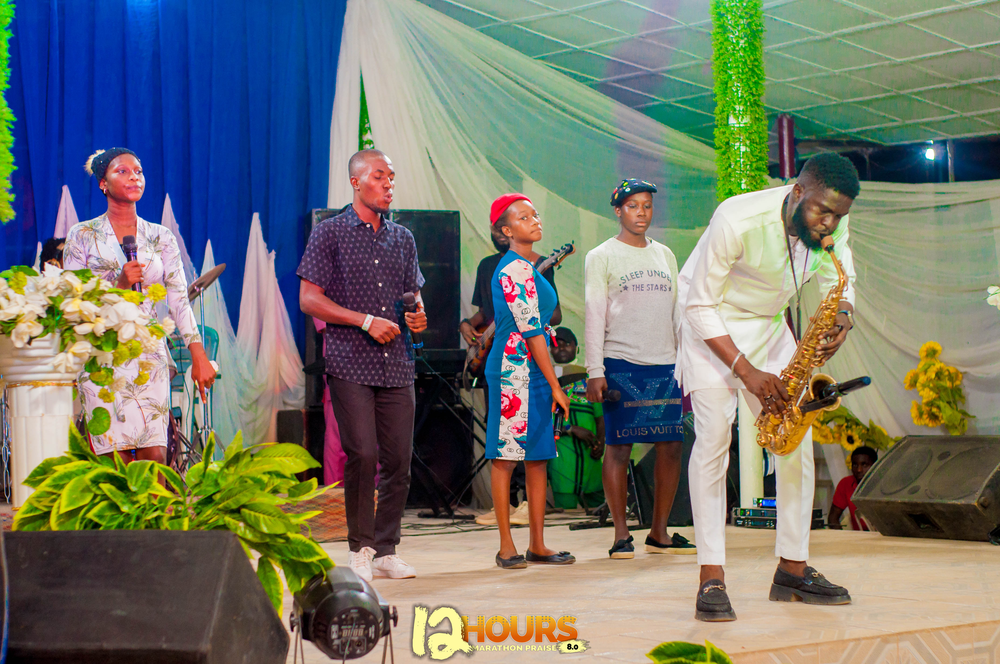
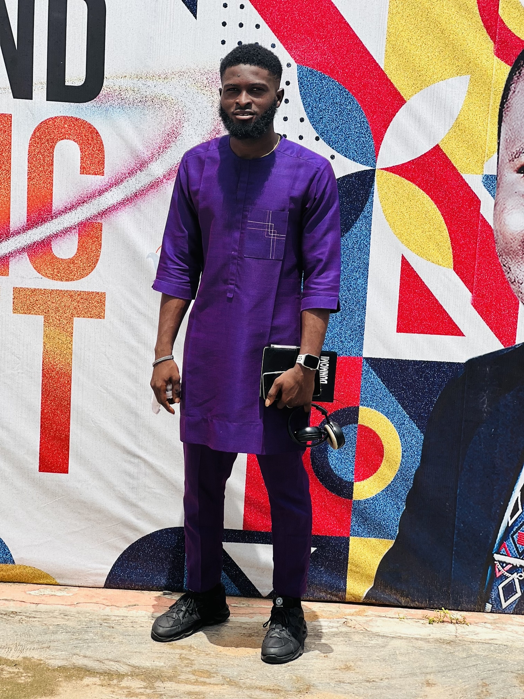
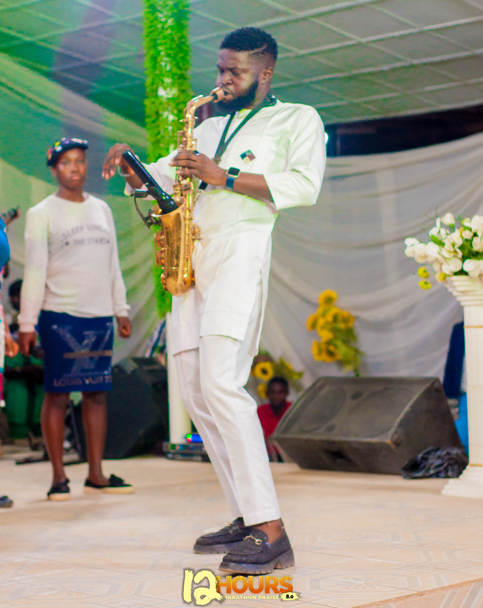
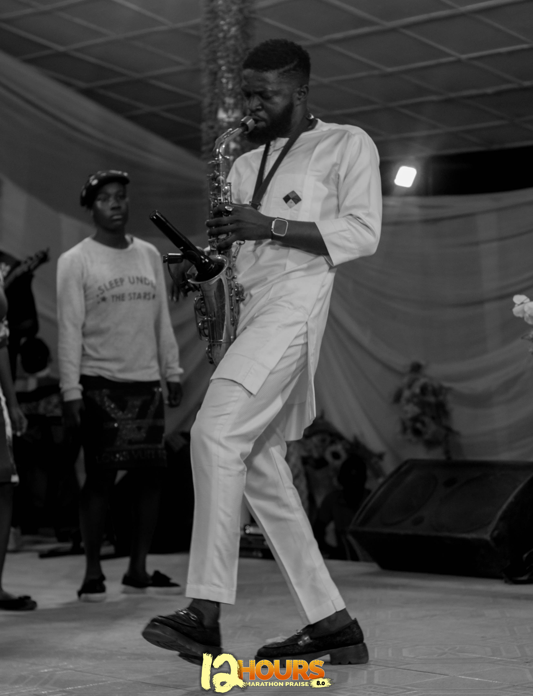
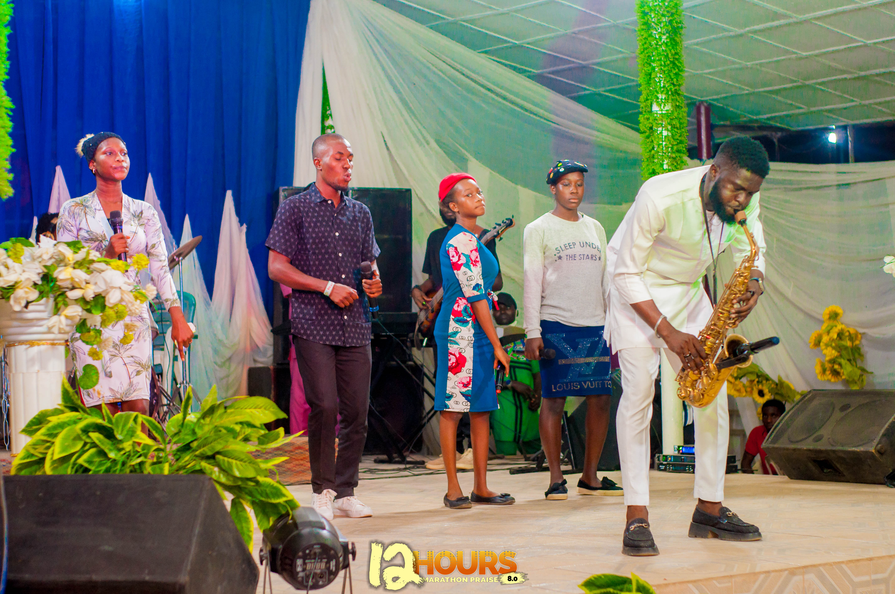

WELCOME !
About Me
Jonathan Dunmomi is a versatile and results-driven professional with a diverse blend of skills in frontend engineering, content writing, social media strategy, and music performance. I combine technical expertise, creative communication, and artistic expression to bring a unique approach to all my projects, making me an asset in both digital and creative spaces.
As a Frontend Engineer, I specialize in building dynamic, responsive, and user-friendly web applications. Proficient in frontend technologies such as HTML, CSS, JavaScript, and React. I focus on delivering seamless digital experiences that are both functional and visually appealing. My ability to optimize performance and ensure cross-device compatibility enables me to create high-quality web solutions that meet the needs of users and businesses alike.
In my role as a "Content Writer", I create compelling written materials across various platforms, from blogs and articles to website copy and product descriptions. With a focus on clarity, engagement, and value, I craft content that resonates with audiences, educates them, and drives action. I have experience writing on a broad spectrum of topics, including technology, lifestyle, and entertainment, always tailoring my voice to suit the brand and purpose.
As a "Social Media Strategist", I develop and implement strategies that elevate brand presence and engagement across various platforms, including Instagram, Twitter, and LinkedIn. My expertise in creating data-driven campaigns, curating content, and analyzing performance ensures that each brand’s social media presence is optimized to reach the right audience, amplify messages, and build meaningful relationships.
In addition, I am a passionate "Saxophonist", with a strong foundation in both performance and composition. My musical background allows me to think creatively and approach challenges with a unique perspective. Whether performing live, recording music, or experimenting with new compositions, my artistic journey has enriched my problem-solving skills and my ability to connect with others on an emotional level.
With a passion for combining technical skills, creative strategy, and artistic flair, I am committed to delivering exceptional results that inspire, engage, and impact audiences across all mediums. Whether building cutting-edge digital experiences, crafting powerful content, designing social media strategies, or sharing the magic of music, I bring a holistic, integrated approach to my work.

 






